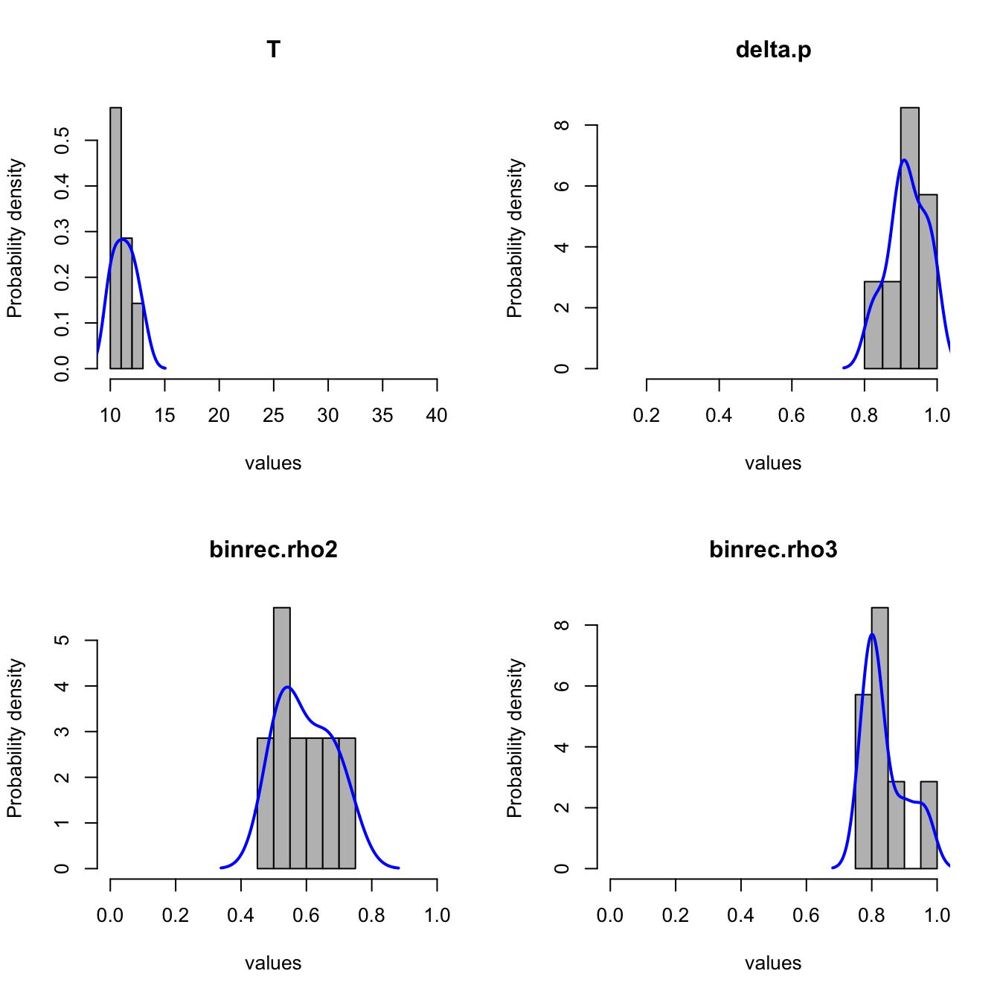

Fine tuning MOEA/D configurations using MOEADr and irace
Claus Aranha, Felipe Campelo
2018-07-01
Comparison_Usage.RmdFor this example, we adapt the tuning protocol proposed by Bezerra et al. (2016)1, employing the Iterated Racing procedure by Lopez-Ibanez et al. (2016)2. Using the irace package, we automatically assemble and fine-tune a MOEA/D configuration based on the components available in the MOEADr package.
Fine tuning setup
Ten unconstrained test problems from the CEC2009 competition3 are used, with dimensions ranging from 20 to 60. Dimensions 30, 40 and 50 were reserved for testing, while all others were used for the training effort. To quantify the quality of the set of solutions returned by a candidate configuration we use the Inverted Generational Distance (IGD). The number of subproblems was fixed as \(100\) for \(m=2\) and \(150\) for \(m=3\)4.
We define a tuning budget of 20,000 runs. The possible configurations are composed from the following choices:
- Decomposition Strategy: SLD or Uniform;
- Scalar Aggregation function: WT, PBI or AWB;
- Type of neighborhood: by weights or by incumbent solutions;
- Type of Update: Standard, Restricted, or Best Subproblem;
- Variation Stack: See below;
For every combination, the parameters of each component (e.g. \(\theta^{pbi}\) for the PBI aggregation function) were also included as part of the tuning experiment. Objective scaling was employed in all cases. No constraint handling was required, and the stop criterion was set as 100,000 evaluations.
The variation stack was composed of three to five operators, using the following rules: the first and second operators could be any of the “traditional” operators currently available in the MOEADr package: SBX, Polynomial Mutation, Differential Mutation, and Binomial Recombination. The third operator could be any of these, or “none” (i.e., not present). The fourth operator could be either a local search operator or “none”. Finally, the variation stack always finished with the truncation repair operator (mainly to avoid errors with the implementation of the test functions). No restrictions were placed on repeats of the variation operators, and the specific conditional parameters for each operator were allowed to be tuned independently for each position in the variation stack.
irace configuration
Here we describe the necessary setup to run the experiment above. First, loading the necessary packages and basic configuration of irace. (parameters.txt, forbidden.txt and other files are only included in the source version of the MOEADr package)
suppressPackageStartupMessages(library(irace))
suppressPackageStartupMessages(library(parallel))
suppressPackageStartupMessages(library(smoof))
suppressPackageStartupMessages(library(MOEADr))
scenario <- irace::defaultScenario()
scenario$seed <- 123456 # Seed for the experiment
scenario$targetRunner <- "target.runner" # Runner function (def. below)
scenario$forbiddenFile <- "../inst/extdata/forbidden.txt" # forbidden configs
scenario$debugLevel <- 1
scenario$maxExperiments <- 20000 # Tuning budget
scenario$testNbElites <- 7 # test all final elite configurations
# Number of cores to be used by irace (set with caution!)
nc <- parallel::detectCores() - 1
scenario$parallel <- nc
# Read tunable parameter list from file
parameters <- readParameters("../inst/extdata/parameters.txt")Second, it is necessary to generate the training instances based on the benchmark function implementations in package smoof:
#===============
### Build training instances
fname <- paste0("UF_", 1:10)
dims <- c(20:29,
31:39,
41:49,
51:60)
allfuns <- expand.grid(fname, dims, stringsAsFactors = FALSE)
scenario$instances <- paste0(allfuns[,1], "_", allfuns[,2])
for (i in 1:nrow(allfuns)){
assign(x = scenario$instances[i],
value = make_vectorized_smoof(prob.name = "UF",
dimensions = allfuns[i, 2],
id = as.numeric(strsplit(allfuns[i, 1], "_")
[[1]][2]))) }
### Build test instances
dims <- c(30, 40, 50)
allfuns <- expand.grid(fname, dims, stringsAsFactors = FALSE)
scenario$testInstances <- paste0(allfuns[,1], "_", allfuns[,2])
for (i in 1:nrow(allfuns)){
assign(x = scenario$testInstances[i],
value = make_vectorized_smoof(prob.name = "UF",
dimensions = allfuns[i, 2],
id = as.numeric(strsplit(allfuns[i, 1], "_")
[[1]][2]))) }Third, we need to specify the code that will generate a MOEA/D configuration based on the parameter string created by the irace routine:
target.runner <- function(experiment, scenario){
force(experiment)
conf <- experiment$configuration
inst <- experiment$instance
# Assemble moead input lists
## 1. Problem
fdef <- unlist(strsplit(inst, split = "_"))
uffun <- smoof::makeUFFunction(dimensions = as.numeric(fdef[3]),
id = as.numeric(fdef[2]))
fattr <- attr(uffun, "par.set")
problem <- list(name = inst,
xmin = fattr$pars$x$lower,
xmax = fattr$pars$x$upper,
m = attr(uffun, "n.objectives"))
## 2. Decomp
decomp <- list(name = conf$decomp.name)
if (problem$m == 2){ # <-- 2 objectives
if(decomp$name == "SLD") decomp$H <- 99 # <-- yields N = 100
if(decomp$name == "Uniform") decomp$N <- 100
} else { # <-- 3 objectives
if(decomp$name == "SLD") decomp$H <- 16 # <-- yields N = 153
if(decomp$name == "Uniform") decomp$N <- 150
}
## 3. Neighbors
neighbors <- list(name = conf$neighbor.name,
T = conf$T,
delta.p = conf$delta.p)
## 4. Aggfun
aggfun <- list(name = conf$aggfun.name)
if (aggfun$name == "PBI") aggfun$theta <- conf$aggfun.theta
## 5. Update
update <- list(name = conf$update.name,
UseArchive = conf$UseArchive)
if (update$name != "standard") update$nr <- conf$nr
if (update$name == "best") update$Tr <- conf$Tr
## 6. Scaling
scaling <- list(name = "simple")
## 7. Constraint
constraint<- list(name = "none")
## 8. Stop criterion
stopcrit <- list(list(name = "maxeval",
maxeval = 100000))
## 9. Echoing
showpars <- list(show.iters = "none")
## 10. Variation stack
variation <- list(list(name = conf$varop1),
list(name = conf$varop2),
list(name = conf$varop3),
list(name = conf$varop4),
list(name = "truncate"))
for (i in seq_along(variation)){
if (variation[[i]]$name == "binrec") {
variation[[i]]$rho <- get(paste0("binrec.rho", i), conf)
}
if (variation[[i]]$name == "diffmut") {
variation[[i]]$basis <- get(paste0("diffmut.basis", i), conf)
variation[[i]]$Phi <- NULL
}
if (variation[[i]]$name == "polymut") {
variation[[i]]$etam <- get(paste0("polymut.eta", i), conf)
variation[[i]]$pm <- get(paste0("polymut.pm", i), conf)
}
if (variation[[i]]$name == "sbx") {
variation[[i]]$etax <- get(paste0("sbx.eta", i), conf)
variation[[i]]$pc <- get(paste0("sbx.pc", i), conf)
}
if (variation[[i]]$name == "localsearch") {
variation[[i]]$type <- conf$ls.type
variation[[i]]$gamma.ls <- conf$gamma.ls
}
}
## 11. Seed
seed <- conf$seed
# Run MOEA/D
out <- moead(preset = NULL,
problem, decomp, aggfun, neighbors, variation, update,
constraint, scaling, stopcrit, showpars, seed)
# return IGD based on reference data
Yref <- as.matrix(read.table(paste0("../inst/extdata/pf_data/",
fdef[1], fdef[2], ".dat")))
return(list(cost = calcIGD(Y = out$Y, Yref = Yref)))
}Finally, we run the experiment, and save the outputs. Note that this experiment will take a long time to run (24 hours in a 24 cluster machine), so take that into account when reproducing these results. For more details on the code above, check the documentation of the irace package.
## Running the experiment
irace.output <- irace::irace(scenario, parameters)
saveRDS(irace.output, "../inst/extdata/RESULTS.rds")
file.copy(from = "irace.Rdata", to = "../inst/extdata/irace-tuning.Rdata")
## Test returned configurations on test instances
testing.main(logFile = "../inst/extdata/irace-tuning.Rdata")
file.copy(from = "irace.Rdata", to = "../inst/extdata/irace-testing.Rdata")Results
First let’s plot the IGD value achieved by the final configurations over the test problems:
## Loading required package: reshape2## Using Problem, Dimension, Objectives as id variables## Loading required package: ggplot2
The final MOEA/D configuration obtained by this experiment is described in the table below. The best configuration is presented in the first two columns. The third column, together with the figure following, provides the consensus value of each component, measured as the rate of occurrence of each component in the seven final configurations returned by the Iterated Racing procedure. These results suggest that the automated assembling and tuning method reached a reasonably solit consensus, in terms of the components used as well as the values returned for the numeric parameters.
| Component | Value | Consensus |
|---|---|---|
| Decomposition | SLD | 1.00 |
| Aggregation Function | AWT | 1.00 |
| Objective Scaling | simple | Fixed |
| Neighborhood | by \(x\) \(T = 11\) \(\delta_p = 0.909\) |
1.00 see Figure see Figure |
| Variation Stack (1) | Differential Mutation \(basis = "rand"\) \(\phi \sim U(0,1)\) |
1.00 1.00 Fixed |
| Variation Stack (2) | Binomial Recombination \(\rho_1 = 0.495\) |
1.00 see Figure |
| Variation Stack (3) | Binomial Recombination \(\rho_2 = 0.899\) |
1.00 see Figure |
| Variation Stack (4) | Truncate | Fixed |
| Update | Restricted \(nr=1\) |
1.00 1.00 |
## Plotting: T## Plotting: delta.p## Plotting: binrec.rho2## Plotting: binrec.rho3
A feature that may seem surprising at first glance is the two sequential applications of Binomial Recombination in the Variation Stack. This means that the results of a Differential Mutation operator are recombined with the incumbent solutions at the (reasonably low) recombination rate \(\rho_1 = 0.495\); and then the resulting vectors are again recombined with the incumbent solutions, at a (much higher) rate \(\rho_2 = 0.899\). However, a quick review of the definition of Binomial Recombination and some elementary probability shows that these two sequential applications of binomial recombinations can be expressed as a single application with \(\rho = \rho_1\rho_2 = 0.445\). The fact that Iterated Racing converged to two operators instead of a single one can be explained by the fact that these situations are equivalent, coupled with the absence of any pressure towards more parsimonious expressions of the Variation Stack in the setup.
Another seemingly counterintuitive aspect of the final configurations reached is the absence of local search. A possible explanation lies in the interaction between the variation operators chosen (differential mutation + binomial recombination) with the type of neighborhood (by \(x\), with a very strong bias towards using points from the neighborhood for the variant operators - \(\delta_p = 0.909\)). The use of points that are relatively similar in the space of decision variables may result in local exploration in this case, since the magnitude of the differential vectors tends to become relatively small. As the iterations progress, this Variation Stack would tend to perform local search movements, with larger pertubations potentially occurring whenever points are sampled from outside the neighborhoods (i.e., about 10% of the cases). It is therefore possible that this local exploration characteristic may have resulted in a MOEA/D configuration that does not benefit from an explicit local search operator.
Besides these considerations, the configurations returned by the Iterated Racing procedure present a few other interesting points. First, the use of a smaller neighborhood than is usually practiced in the literature (T = 11), with the neighborhood relations being defined at each iteration by the similarities between the incumbent solutions of each subproblem. Second, the use of a very strict Restricted Neighborhood Update, with \(n_r = 1\), which suggests an advantage in trying to maintain diversity instead of accelerating convergence. The use of the variation operators of the MOEAD/D-De without Polynomial Mutation (as is usually practiced in the MOEA/D-DE) is also curious, as it may indicate a more parsimonious variation stack than is usually practiced in the literature.
Recommendations
As can be seen, exploring the space of possible component configurations and parameter values can render improved algorithmic configurations and new insights into the roles of specific components and parameter values.
Thus, we highly recommend that a similar approach is used when developing new components, in order to observe not only the individual performance of the novel component, but also its interaction with components which already exist in the MOEA/D environment.
Lecture Notes in Computer Science 9018:48–63, 2016.↩
Operations Research Perspectives 3:43-58, 2016↩
Functions UF1 to UF10 (http://dces.essex.ac.uk/staff/qzhang/moeacompetition09.htm), using the standard implementation available in the smoof package.↩
For the Simplex Lattice Design the actual number was 153 for \(m = 3\), given the specifics of this method. Please refer to the documentation of function decomposition_sld() for details↩